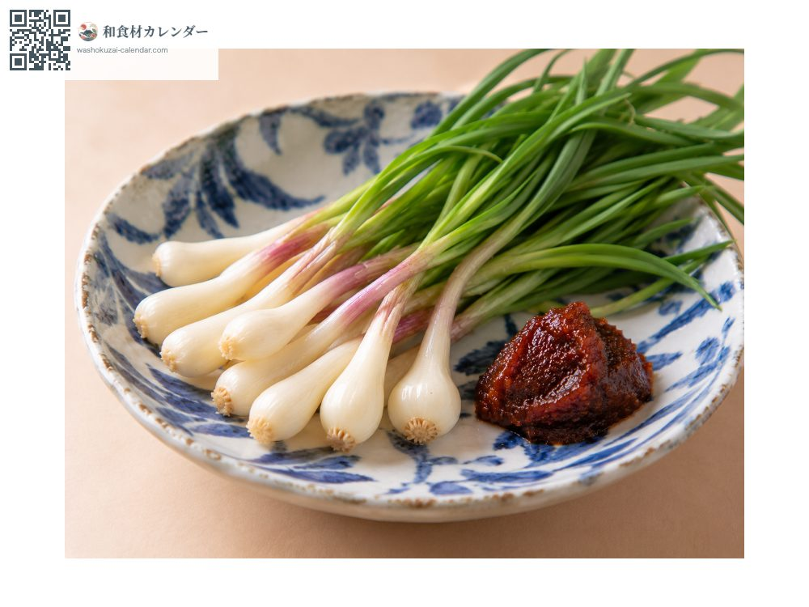
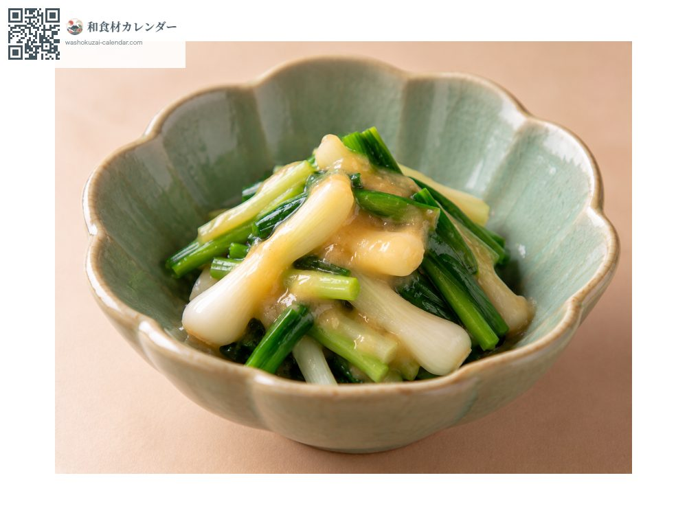
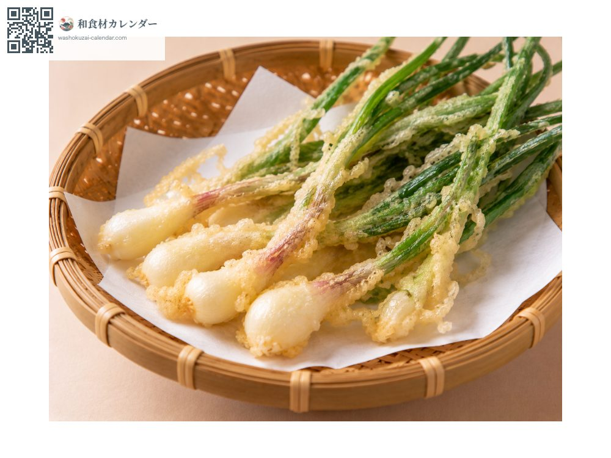
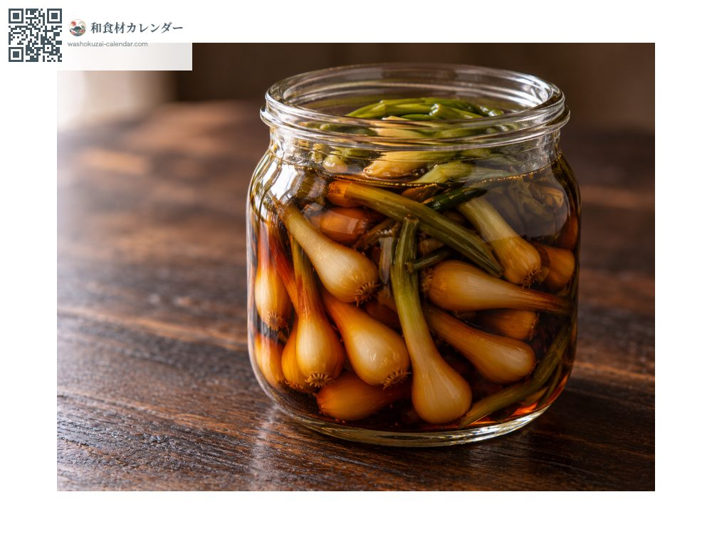

野菜
ノビル
のびる
別名・別表記野蒜、nobiru
旬は3月・4月

旬の時期
1月
2月
3月
4月
5月
6月
7月
8月
9月
10月
11月
12月
旬出回り
調理法

生味噌
球根に味噌をつけて生で食べる。最も一般的。

酢味噌和え
さっと茹でて甘酢味噌で和える。

天ぷら
葉ごと揚げる。香りが立つ。

醤油漬け
球根を醤油に漬ける。日持ちする。
選び方
球根が白くふくらみ、葉がしゃんとしているもの。
保存方法
湿らせた新聞紙に包んで冷蔵。香りが飛ぶので早めに。
主な産地
豆知識
ネギやニンニクに近い野草。球根（鱗茎）と葉の両方を食べる。独特の辛みと香りがあり、生のまま味噌をつけるのが一般的。葉がニラに似たスイセンと取り違えた中毒事故があるため、自生のものを採る際は注意が必要。